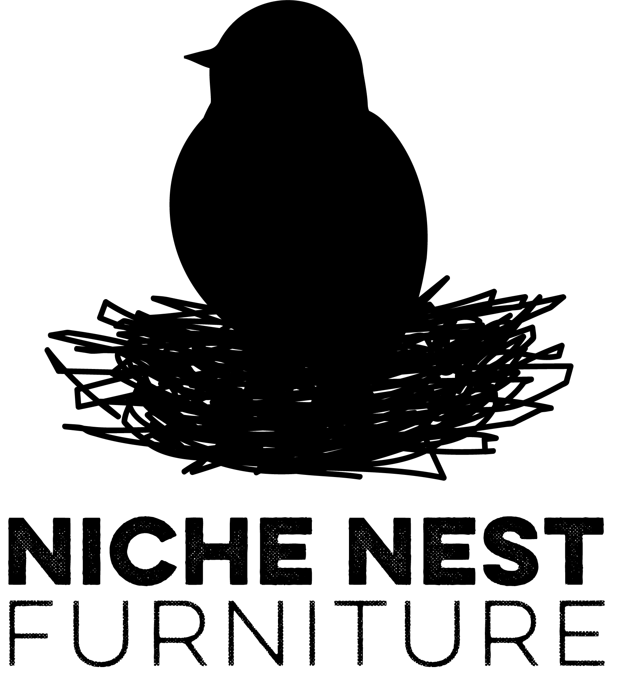
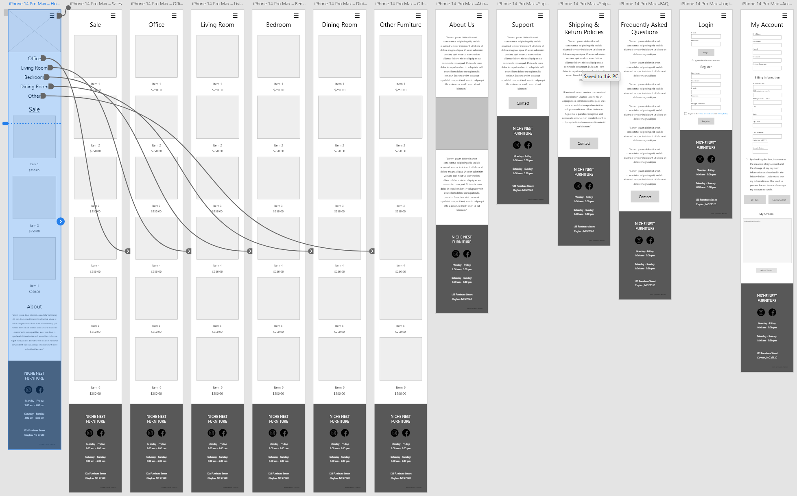
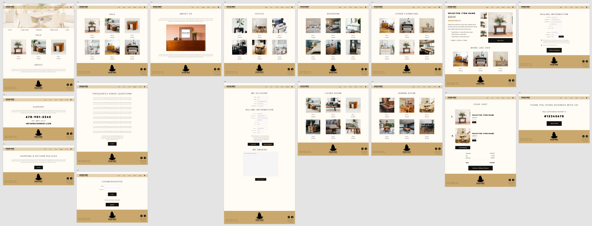
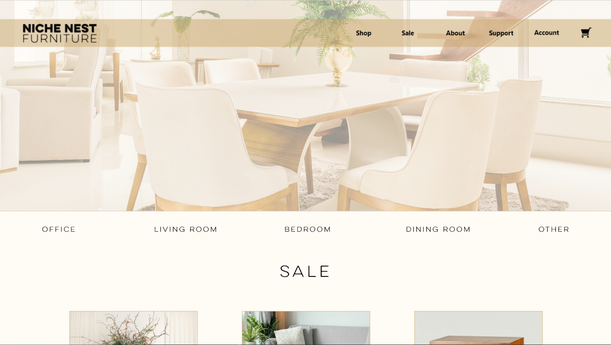
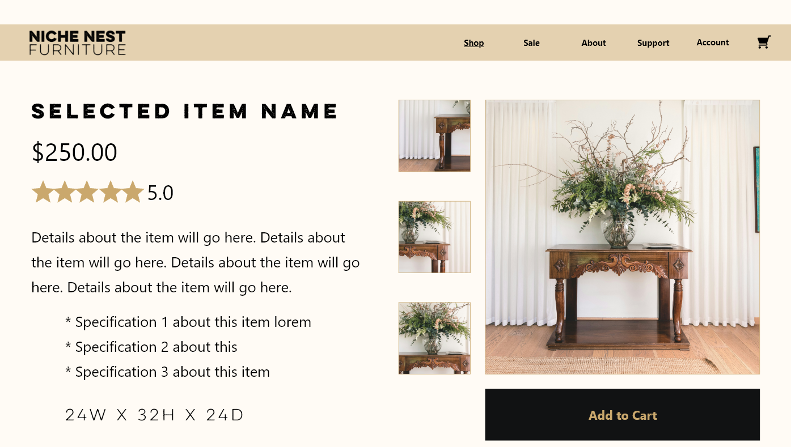

Niche Nest Furniture - Responsive Website, Mobile App Prototype, Animations, and More
This subject was used for two separate school projects. GRD-240: User Interface/User Experience and DME-140: Intro to Audio/Video Media. I practiced principles of branding, competitive research, Adobe XD in both courses, and learned Adobe Premier Pro and After Effects basic use in DME-140.
Problem Statement - Online Shoppers who seek unique, high-quality wooden furniture need an intuitive, responsive e-commerce platform to purchase furniture conveniently because they value a seamless and engaging shopping experience.
Possible Solution - This responsive website aims to make the process of buying elegant high-quality wooden furniture engaging and streamlined, with a user-friendly clean interface and clear company branding that ensures a trustworthy and dependable experience.
Project Duration - Spring Term 2024
Tools Used - Adobe: XD, Illustrator, Photoshop, Premier Pro, and After Effects

I created low and high fidelity mockups for a responsive website and mobile app prototype.
   I made animated logos and microinteractions for this furniture site to introduce dynamic elements and showcase my newly learned abilities in animation software
The final project was several portions we created combined into a cumulative animated design